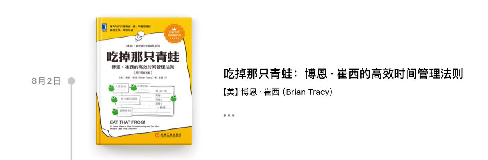

“如果你每天早上醒来的第一件事情是吃掉一只活的青蛙，你会欣喜地发现，在这一天接下来的时间里，将没有什么比这个更糟糕的事情了”。
给任务分重要性和顺序算是老生常谈，最核心的无非是通辽狠人的共性——执行力。
如果想从这本里学习新理论那肯定没有，但这本足够讲人话也足够清晰，所以推荐。

给任务分重要性和顺序算是老生常谈，最核心的无非是通辽狠人的共性——执行力。
如果想从这本里学习新理论那肯定没有，但这本足够讲人话也足够清晰，所以推荐。

甲鱼不正经书评47
《吃掉那只青蛙：博恩·崔西的高效时间管理法则》
目前为止看过的最好的时间管理方面的书，原理简捷而且可操作性强；书最后贴心地设置了方法的总结，直接翻到最后照做都行。
如果想要做成一件困难的事情，就需要每天吃掉一只又一只恶心的青蛙。
#甲鱼不正经书评 https://t.co/SBaN6Ushdt
《吃掉那只青蛙：博恩·崔西的高效时间管理法则》
目前为止看过的最好的时间管理方面的书，原理简捷而且可操作性强；书最后贴心地设置了方法的总结，直接翻到最后照做都行。
如果想要做成一件困难的事情，就需要每天吃掉一只又一只恶心的青蛙。
#甲鱼不正经书评 https://t.co/SBaN6Ushdt